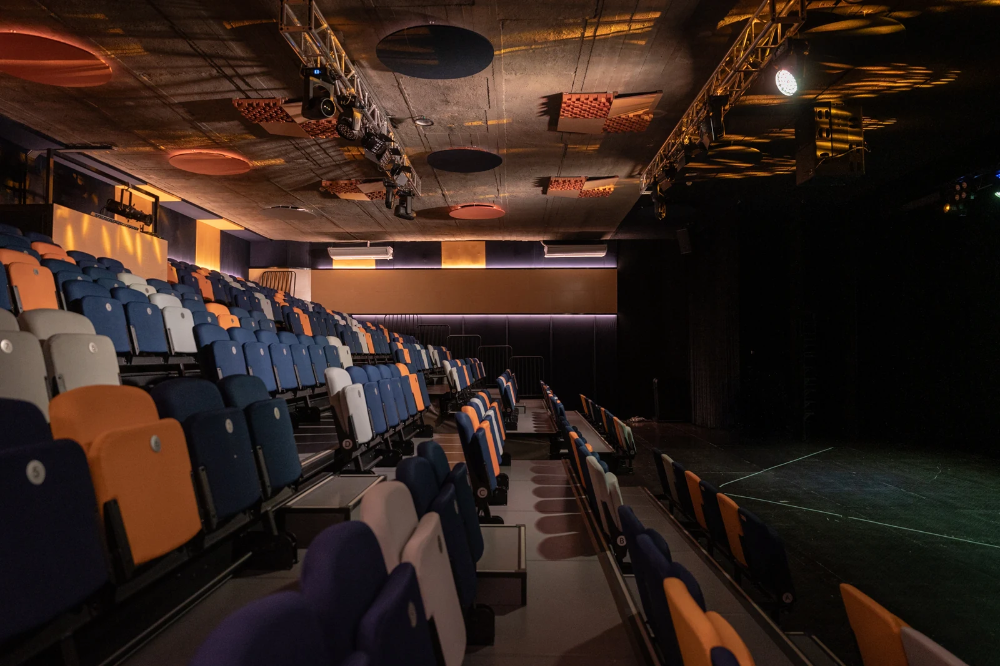
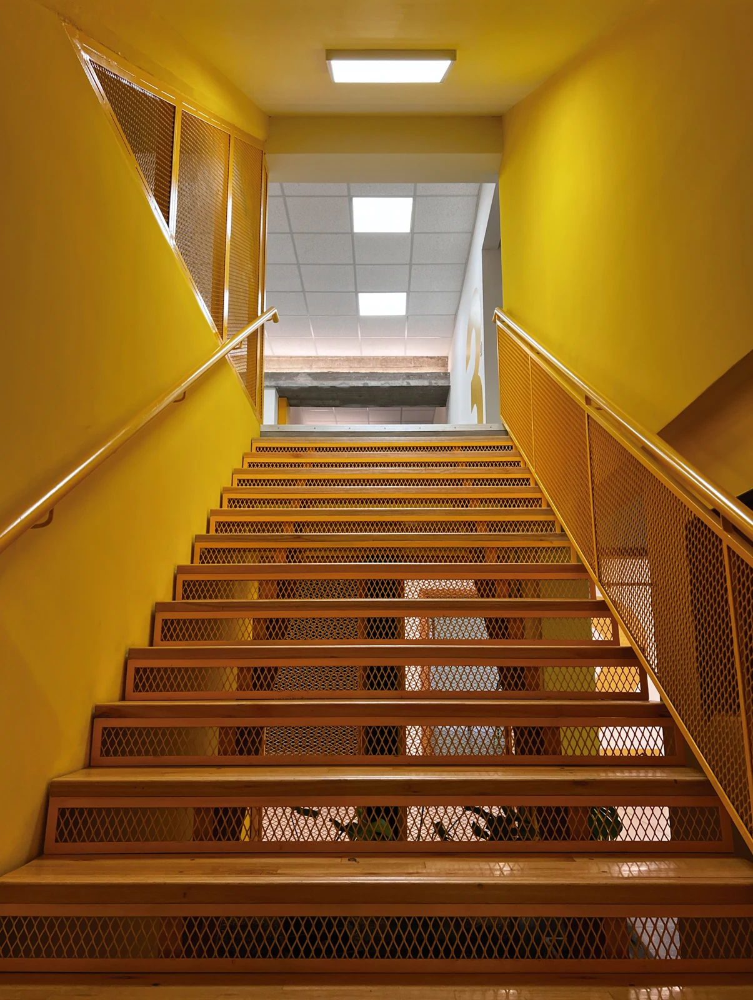
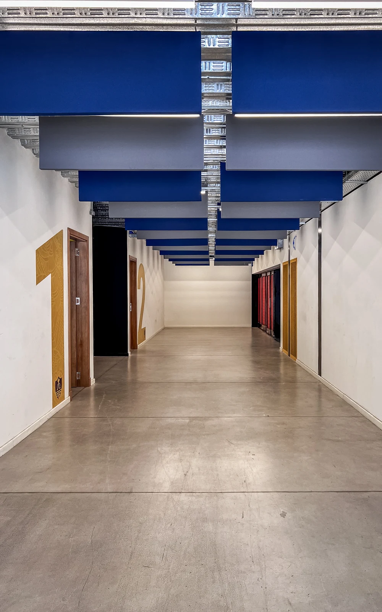
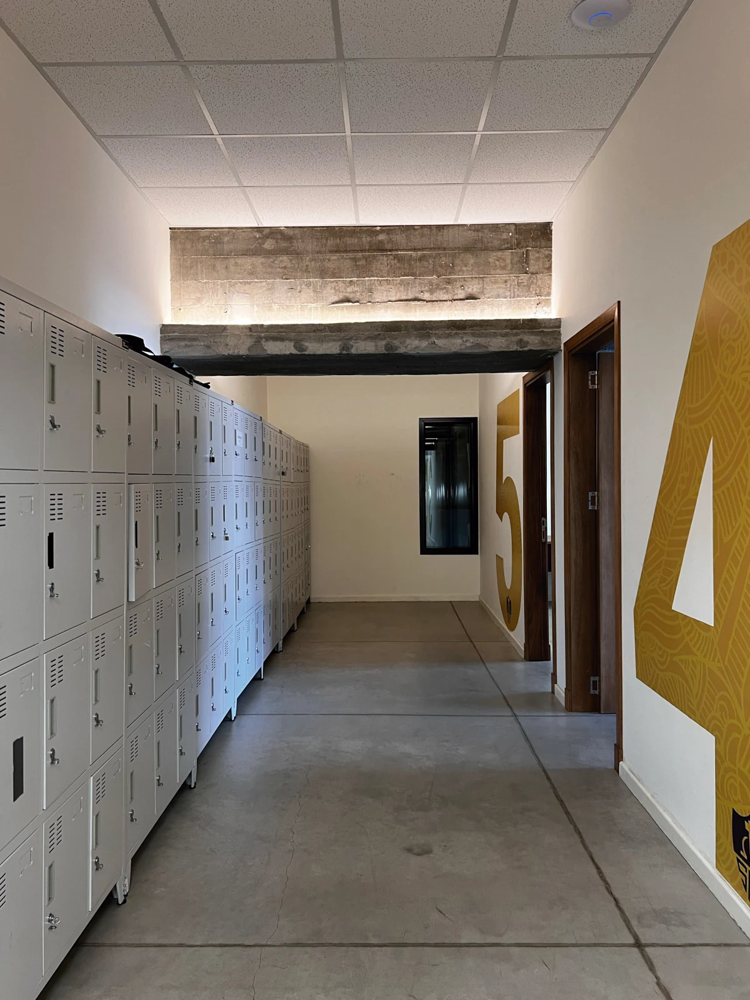
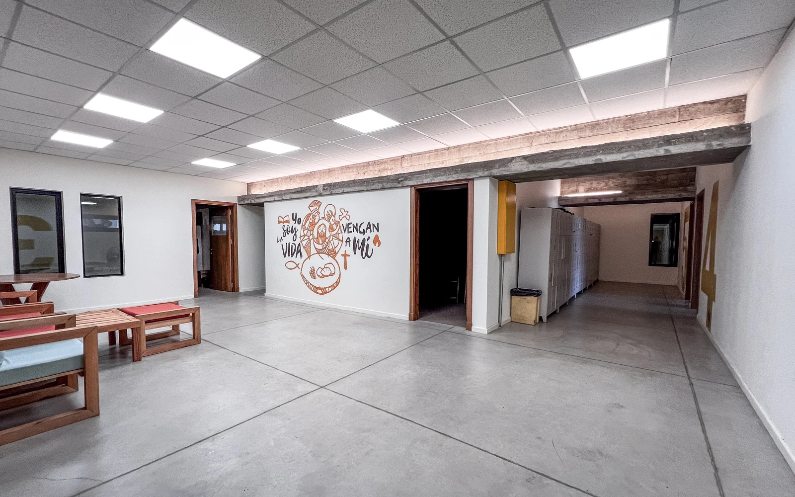
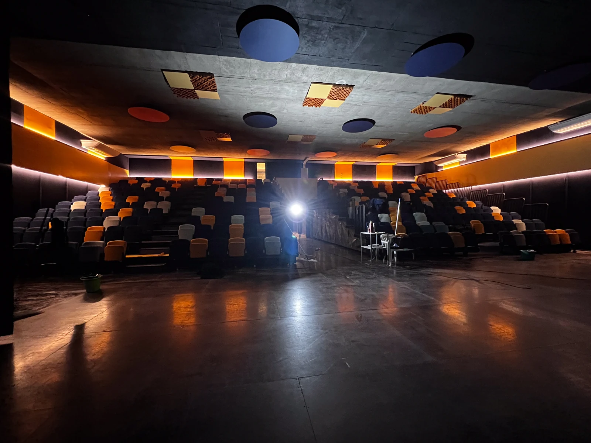
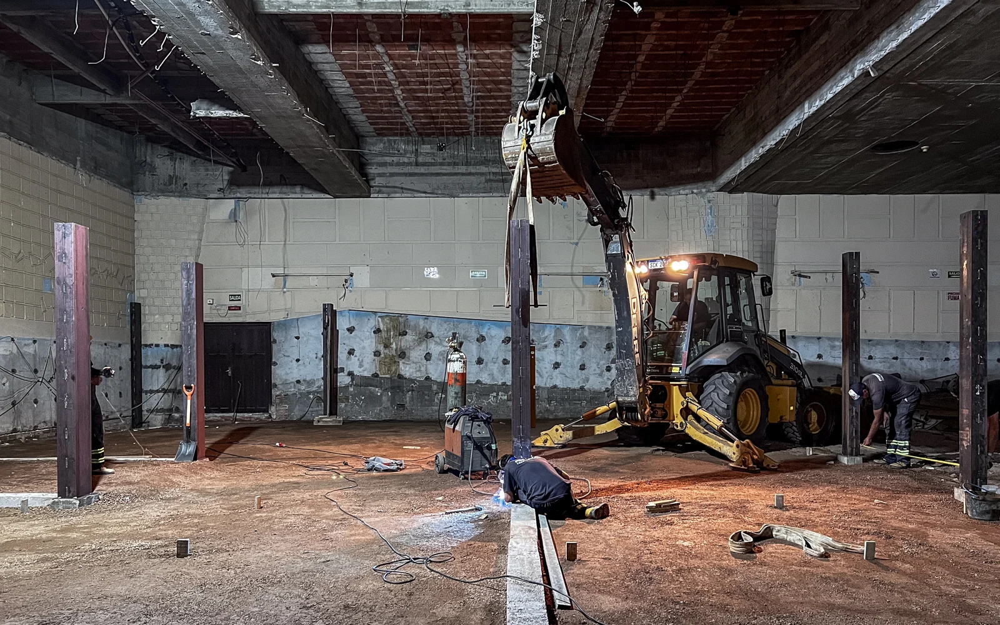
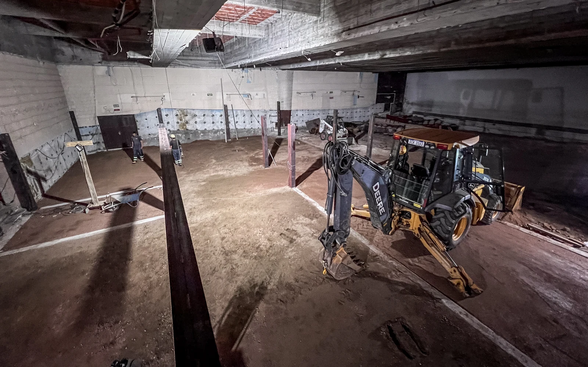
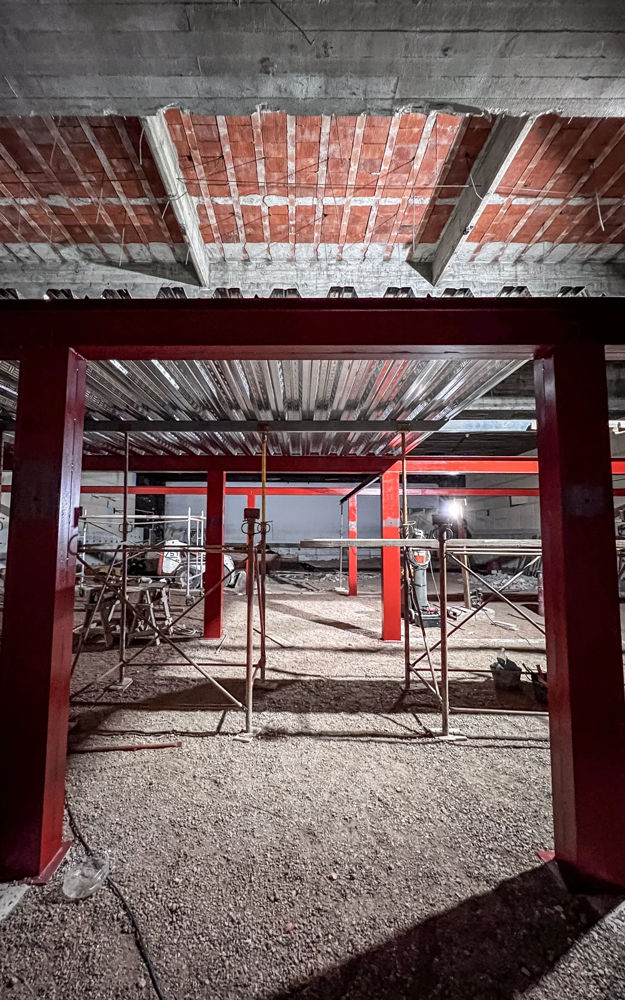
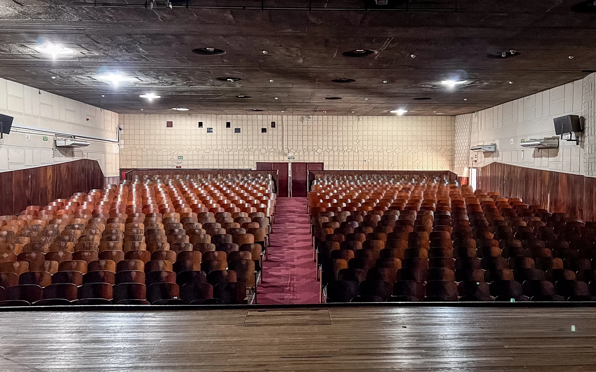

04 / PROYECTO
Colegio
Maturana
Reconversión del histórico Cine Maturana en un conjunto de aulas y un auditorio flexible, manteniendo su función cultural y social.
Ante la necesidad del colegio de incorporar nuevos salones y la imposibilidad normativa de construir en un área nueva, se propuso reformar el histórico Cine Maturana, un edificio emblemático del barrio Prado.
La intervención debía sumar espacios educativos sin perder la función escénica y expositiva del edificio. Por este motivo, el proyecto se organiza en dos grandes sectores. El primero contiene cinco salones de distintos tamaños distribuidos en dos niveles, un salón de usos múltiples, salas de adscripción y espacios de guardado.
El segundo sector se proyecta como un auditorio multiuso, equipado con un escenario amplio, sistemas profesionales de audio e iluminación y gradas retráctiles que permiten configuraciones frontales y alternativas según cada actividad.









